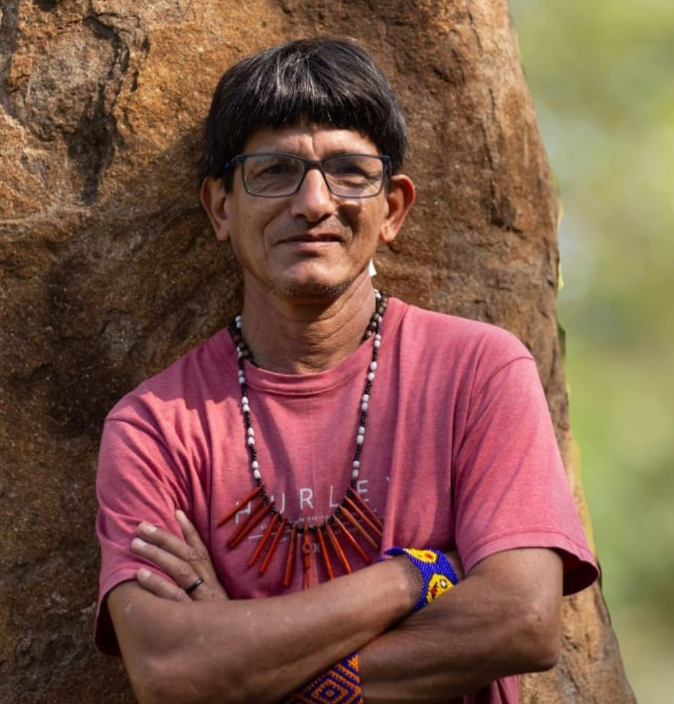

Olívio Zeferino da Silva

Biografia
Olívio Zeferino da Silva nasceu em Nova Itacolomi (PR), em 10 de outubro de 1965, e desde cedo teve contato com a cultura Guarani, através de sua mãe e de sua avó. Olívio também teve contato com indígenas da etnia Kaingang, na cidade de São Sebastião, no Paraná. Foi batizado de Jekupé (que significa mestiço), após participar do “batismo das almas” das aldeias Guarani Mbyá da região metropolitana de São Paulo (SP). Iniciou seus estudos em filosofia na PUC-PR e, posteriormente, na Universidade de São Paulo (USP), porém não concluiu.
Olívio participou da criação do Núcleo de Escritores e Artistas Indígenas (NEARIN) em 2004, ligado ao Instituto Indígena Brasileiro para a Propriedade Intelectual (INBRAPI). Começou a escrever literatura em 1984, de forma independente. Sua produção se aproxima do contexto escolar, publicando em 1999 uma obra própria, chamada “500 anos de angústia”, uma coletânea de poemas.
Principais Obras
 Ajuda do Saci – Kamba’i
Ajuda do Saci – Kamba’i(2006)
 500 anos de angústia
500 anos de angústia(1999)
 O Saci verdadeiro
O Saci verdadeiro(2000)
Literatura
Jekupé possui mais de 30 obras, abrangendo diversos gêneros, desde contos e poesias até romances e livros infantis, entre elas “Leópolis inesquecível” (1993), “Iarandu, o cão falante” (2002), “O Saci verdadeiro” (2000), “Ajuda do Saci – Kamba’i” (2006) e “O presente de Jaxy Jaterê” (2017). Através de uma literatura marcada pela cultura indígena, o escritor busca representar seu povo e contribuir para a desconstrução de estereótipos acerca dos povos indígenas.
Premiações
Não foram informadas premiações no material fornecido para este catálogo.
Complemento
Acesse o link abaixo para conhecer mais sobre o autor e suas obras.
Olívio Jekupé no Instagram